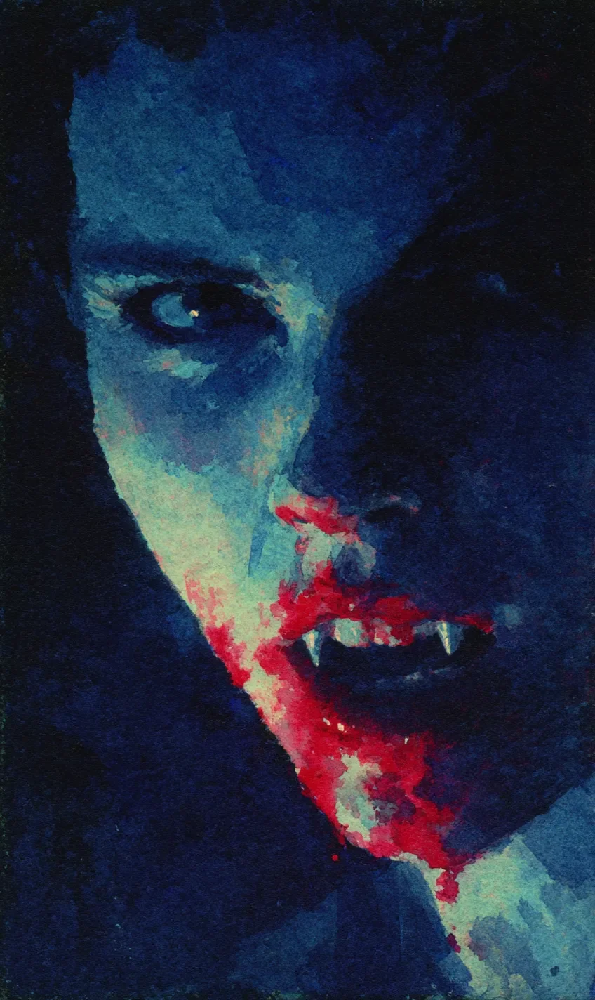

민준은 골목의 어두운 구석을 지나며 습관적으로 뒤를 돌아보았다. 비릿한 금속성 냄새가 그의 코끝을 스쳤다. 오늘 밤, 그는 또 한 번의 더러운 일을 처리했고, 이제는 흔적을 지우며 도망쳐야 했다. 손바닥에 묻은 누군가의 피가 식어가며 끈적거렸다. 하지만 누군가 자신을 지켜보고 있다는 기분이 들었다. 가로등 불빛이 깜빡거릴 때마다 그림자가 기괴하게 늘어졌다.
[Min-jun looked back habitually as he passed through a dark corner of the alley. A metallic, fishy smell brushed against the tip of his nose. Tonight, he had handled another dirty job, and now he had to escape while erasing his tracks. The blood of someone on his palms was becoming sticky as it cooled. However, he felt like someone was watching him. Every time the streetlight flickered, the shadows stretched out grotesquely.]
그는 발걸음을 재촉했다. 낡은 구두 소리가 텅 빈 골목에 날카롭게 울렸다. 그때, 골목 끝에서 검은 실루엣이 나타났다. 창백하다 못해 푸른빛이 도는 피부와 칠흑 같은 머리카락, 그리고 비정상적으로 붉은 입술을 가진 여자가 서 있었다. 그녀의 눈은 어둠 속에서도 굶주린 짐승처럼 번뜩이고 있었다. 그녀는 소라였다. 민준이 저지른 모든 악행을 수개월 동안 그림자 속에서 지켜보던 포식자였다.
[He quickened his pace. The sound of his old shoes rang sharply in the empty alley. Just then, a black silhouette appeared at the end of the alley. A woman with skin so pale it looked bluish, jet-black hair, and abnormally red lips was standing there. Her eyes were flashing like a hungry beast even in the darkness. She was Sora. She was a predator who had watched all the evil deeds Min-jun committed from the shadows for months.]
“오랫동안 너를 기다렸어, 민준아.” 소라의 목소리는 차가운 칼날처럼 그의 신경을 긁었다. 민준은 본능적으로 주머니 속의 칼을 꽉 쥐었다. “누구야? 죽고 싶어?” 그는 거칠게 내뱉었지만, 목소리는 미세하게 떨리고 있었다. 소라는 대답 대신 소리 없이 다가왔다. 그녀의 움직임은 인간의 물리 법칙을 비웃는 듯했다. 순식간에 거리가 좁혀졌고, 그녀의 서늘한 숨결이 그의 목에 닿았다.
[”I’ve been waiting for you for a long time, Min-jun.” Sora’s voice scraped his nerves like a cold blade. Min-jun instinctively gripped the knife in his pocket tightly. “Who are you? Do you want to die?” He spat out roughly, but his voice was trembling slightly. Instead of answering, Sora approached soundlessly. Her movements seemed to mock human physical laws. In an instant, the distance closed, and her cool breath touched his neck.]
민준이 칼을 휘둘렀지만, 허공을 가를 뿐이었다. 소라는 이미 그의 등 뒤에 있었다. 그녀의 차가운 손톱이 그의 목덜미를 부드럽게 훑었다. “너 같은 쓰레기의 피는 오염되어 있겠지만, 나의 갈증은 그런 걸 가릴 처지가 아니거든.” 그녀의 말이 끝나기도 전에, 민준의 어깨에 날카로운 통증이 내리꽂혔다. 소라의 송곳니가 그의 단단한 살점을 뚫고 들어가 힘줄을 끊어버렸다.
[Min-jun swung the knife, but it only sliced through the air. Sora was already behind his back. Her cold fingernails gently skimmed the nape of his neck. “The blood of trash like you must be contaminated, but my thirst is in no position to be picky.” Before she could even finish her sentence, a sharp pain struck down on Min-jun’s shoulder. Sora’s fangs pierced through his tough flesh and severed the tendons.]
민준은 비명을 지르려 했지만, 소라의 다른 손이 그의 입을 틀어막았다. “조용히 해. 식사 예절을 지켜야지.” 그녀는 잔인하게 웃으며 그의 목을 더 깊이 물어뜯었다. 살점이 뜯겨나가는 불쾌한 소리와 함께 뜨거운 피가 분수처럼 뿜어져 나왔다. 소라는 그 피를 한 방울도 놓치지 않겠다는 듯 탐욕스럽게 들이켰다. 그녀의 얼굴은 순식간에 민준의 피로 붉게 물들었다.
[Min-jun tried to scream, but Sora’s other hand muffled his mouth. “Be quiet. You should observe table manners.” She laughed cruelly and bit deeper into his neck. Along with the unpleasant sound of flesh being torn, hot blood gushed out like a fountain. Sora drank greedily as if she wouldn’t miss a single drop of that blood. Her face was instantly stained red with Min-jun’s blood.]
고통은 감각을 넘어선 공포로 변했다. 민준은 자신의 생명력이 빠져나가는 것을 실시간으로 느꼈다. 소라는 멈추지 않았다. 그녀는 그의 가슴팍에 손톱을 박아 넣고 살을 벌렸다. 갈비뼈가 부러지는 소리가 골목에 메아리쳤다. 그녀는 그의 심장이 박동하는 것을 지켜보며, 그 살아있는 박동을 손안에 가두었다. “아직 뛰고 있네. 정말 질긴 생명력이야.”
[The pain turned into a terror that transcended sensation. Min-jun felt his life force draining away in real-time. Sora didn’t stop. She dug her fingernails into his chest and tore the flesh open. The sound of ribs snapping echoed in the alley. She watched his heart beating and trapped that living pulse within her hand. “It’s still beating. What a tenacious life force.”]
소라는 그의 가슴 안쪽으로 얼굴을 묻었다. 따뜻하고 비릿한 내장 사이로 그녀의 혀가 오갔다. 민준의 눈은 초점을 잃고 하늘을 향했다. 마지막으로 본 가로등 불빛이 소라의 피 묻은 얼굴을 비추었다. 그녀의 입가에는 만족스러운 미소가 걸려 있었다. 마침내 그의 심장이 멈추었을 때, 소라는 피로 젖은 입술을 떼고 일어섰다.
[Sora buried her face inside his chest. Her tongue flicked between the warm, metallic organs. Min-jun’s eyes lost focus and turned toward the sky. The last streetlight he saw illuminated Sora’s blood-stained face. A satisfied smile was hanging on the corners of her mouth. When his heart finally stopped, Sora pulled her blood-soaked lips away and stood up.]
그녀는 바닥에 널브러진 고깃덩어리를 차갑게 내려다보았다. “맛없을 줄 알았는데, 복수심이 섞여서 그런지 꽤 괜찮네.” 소라는 손에 묻은 피를 핥으며 어둠 속으로 유유히 사라졌다. 골목에는 비릿한 피 냄새와 차가운 정적만이 남았다. 내일 아침, 사람들은 이 끔찍한 현장을 발견하겠지만, 그 누구도 이 ‘벌’을 내린 주인공이 누구인지 알지 못할 것이다.
[She looked down coldly at the lump of meat sprawled on the ground. “I thought it would taste bad, but maybe because it was mixed with revenge, it’s quite alright.” Sora licked the blood off her hands and vanished leisurely into the darkness. Only the metallic smell of blood and a cold silence remained in the alley. Tomorrow morning, people will discover this horrific scene, but no one will know who the protagonist was who delivered this ‘punishment.’]